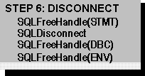

The final step is to disconnect from the data source, as illustrated in the following figure. First, the application frees any statement handles by calling SQLFreeHandle. For more information, see “Freeing a Statement Handle” in Chapter 9, “Executing Statements.”

Next, the application disconnects from the data source with SQLDisconnect and frees the connection handle with SQLFreeHandle. For more information, see “Disconnecting from a Data Source or Driver” in Chapter 6, “Connecting to a Data Source or Driver.”
Finally, the application frees the environment handle with SQLFreeHandle and unloads the Driver Manager. For more information, see “Allocating the Environment Handle” in Chapter 6, “Connecting to a Data Source or Driver.”